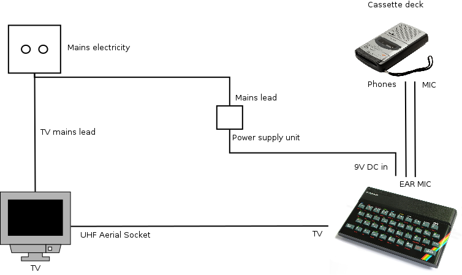
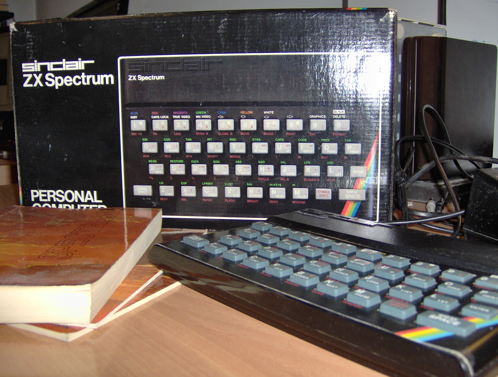
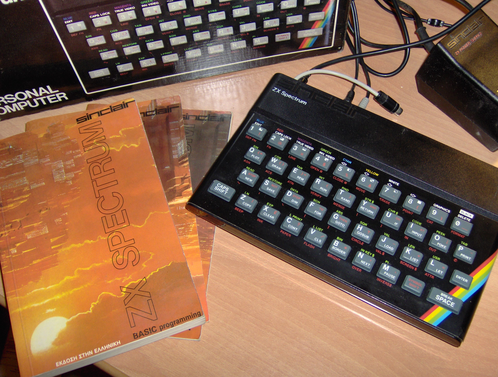

{kind=link}
{kind=link}
LET name$="Periklis" PRINT name$

The first computer I’ve used and I remember (8-bit game consoles don’t count) was a 386 running MS-DOS and Windows 3.1. However, before that my parents have got a very cool computer! That was a Sinclair’s ZX Spectrum.
ZX Spectrum was released in 1982 by Sinclair, it got a 16kB or 48kB RAM and a Z80 processor running @ 3.5MHz! That was pretty awesome back then and if you ask me I find it still pretty awesome!
Spectrum’s operating system was Sinclair BASIC which is a BASIC programming language dialect. As you assume Spectrum programs were written is Sinclair BASIC. You can read more about ZX Spectrum in wikipedia.
So, to continue the story about ZX Spectrum and I, I haven’t used it until I got into high school. Then somehow I came across with it during some house cleaning. As a curius person I am etc, I plugged it and played with it.
The most advanced thing I wrote in Spectrum was a little program which displayed the Greek flag and played the Greek national anthem that I have found in the Sinclair BASIC programming guide.
Ok, that was back then, let’s get back to the present!
A couple of days a ago, during another house cleaning I spotted the original ZX Specrtum’s box. So, that was a great chance to pack the Spectrum into its original box and write this blog post to introduce this piece of old school technology to people that never had the chance to see it back then.
Furthermore, I’ll introduce you the basic Spectrum’s set up which is pretty cool and how writing, saving and loading programs works.
Picture is related!

A figure like that was included in ZX Spectrum quick start guide. Due to copyright issues I won’t include the exact figure but that one which I have made.
As you can see we need to connect ZX Spectrum to a TV. The TV will work as a monitor for the Spectrum. After connecting the Spectrum’s output to the UHF Aerial Socket as an ordinary video player we need to tune the television in channel UHF 36. If everything goes well we will see Spectrum’s initial screen with Sinclair’s copyright note.
It is possible to run directly commands in Sinclair BASIC. So we could directly run:
LET name$="Periklis" PRINT name$
A program is a series of commands that can be repeated later. Here is an example:
10 LET b$="What is your age? " 20 LET a$="Your age is " 30 INPUT (b$);age 40 PRINT a$;age
The line numbers are mandatory as BASIC needs them to define which instruction is to be executed. It is normal to start at 10 and to increase this by 10 for each new line because this allows other lines to be inserted later.
After writing the program nothing will happen until we use the RUN command.
Use RUN as many times as you want to run the program. You can use the LIST command to see the program’s source code again.
To write a new program use the NEW command.
There is a limit to how many instructions can be stored in the computer. The ZX Spectrum indicates this limit by emitting a buzz.
It is also possible to write programs, store them and execute them later, whenever you want. However ZX Spectrum doesn’t have a non-volatile data storage device. The prorgams are stored temporary in the RAM.
So how is it possible to write programs for later use?
The answer is simple. If you see more carefully the setup figure you will see a cassette deck that I haven’t mentioned yet. It is possible to save programs in an ordinary cassette through a cassette recorder and load them later with it.
Now let’s assume that we want to save the program above. Let’s call it Age. We should use the SAVE "Age" command.
Then the computer will come up with a message Start tape then press any key. After that press a key, and when the computer reports OK stop the recording.
Your program will be succesfully saved in the tape. Awesome! Isn’t it?
To use a saved program you have to LOAD it first. Rewind the tape and if you have a cassette player with a tape counter go just before start recording your prorgam. Use the LOAD "Age" command and play the cassette.
That was it!
I believe that saving a program in a cassette is pretty awesome. I hope you enjoyed this article! Maybe in 30 years or so your own state of the art computer will seems as exotic as ZX Spectrum to the future generations!


Unfortunately the asdf keys seems not to work anymore… :_(

Designed by Periklis Ntanasis